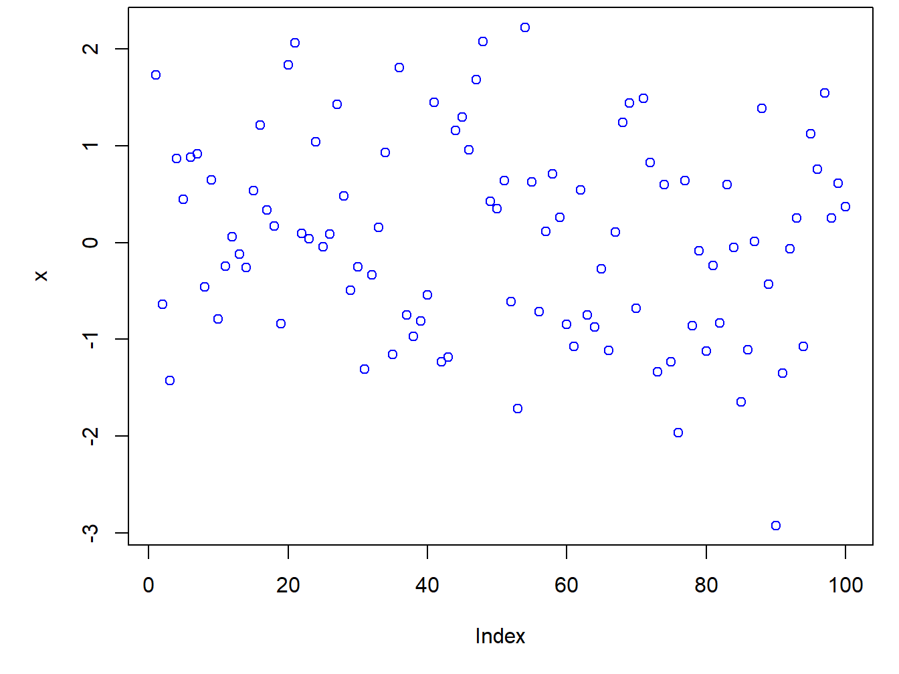

2 Primeros ejemplos de comandos en R
2.1 R como calculadora
R puede ser usado como una calculadora. Con sólo escribir la ecuación en la consola
10^2 + 36R devolverá la siguiente respuesta
1362.2 Objetos
R trabaja con objetos, así que es posible crear un objeto que sea un número y da la opción de utilizar ese objeto para otros cálculos. Por ejemplo, se puede crear el siguiente objeto
Usando <- o = hará lo mismo, representar el signo igual
Se puede observar que el objeto a aparece en la ventana Environment. Para saber que contiene un objeto, se llama al objeto a y se corre (otra forma es escribir en la consola a y dar ENTER)
## [1] 4o hacer cálculos con a
## [1] 20Si se específica a de nuevo, se borrara el valor que tenía antes. También es posibles asignar un nuevo valor a a usando el valor anterior
## [1] 14Para eliminar todos los objetos de la memoria de R, se debe utilizar el siguiente código
rm(list <- ls())o dar clic en del Environment. Si sólo se quiere eliminar un objeto, se escribe
Tarea 2: Repita la Tarea 1 haciendo varios pasos creando objetos
2.3 Escalares, vectores y matrices
Para definir un vector se utiliza la función c, la cual significa concatenar. Por ejemplo, para definir un vector con los número 1, 7, 9 y 13, se escribe
## [1] 1 7 9 13Crear vectores de datos para tres individuos
Acceder al segundo elemento del objeto altura
## [1] 89.3Accediendo a un rango de valores de un vector
## [1] 89.3 78.2Excluyendo el elemento 2 utilizando el signo menos
## [1] 50.1 78.2Use un vector para indicar si se incluye un elemento
## [1] 50.1 89.3## [1] 50.1 89.3## [1] 78.22.4 Funciones
Algunas funciones ya se encuentran implementadas en R y hay otras que debe descargarse el paquete necesario para utilizarla. Tambié se pueden programas funciones propias.
Por ejemplo, para calcular la media del objeto b creado anteriormente, se debe utilizar el siguiente código
mean(b)
Tarea 3: Calcule la suma de 7, 8, 90 y 56, primero construyendo el vector y luego usando la función sum
La función rnorm, como otro ejemplo, es una función estándar en R la cual crea muestras aleatorias de una distribución normal. Por jemplo, para generar 10 valores aleatorios sería
## [1] 0.61843374 -1.58619884 0.10644746 0.88749176 1.68906868 -0.01444084
## [7] -0.14260202 0.36672615 -1.11985124 0.83429907Para entender mejor qué hacen y cuáles son los argumento de las funciones, podemos ir a la ventana de Help y escribir rnorm, esto genera la siguiente descripción de la función
La función rnorm tiene tres argumentos: n, mean=0 y sd=1. La descripción de los argumentos muestra que n es el número de observaciones, mean=0 es para fijar la media y por defecto es 0, y sd=1 es la desviación estándar y por defecto se fija en 1. Que estén fijados algunos valores por defecto indica que si no se pone nada R utilizará estos valores
Por ejemplo, si se quiere generar 10 valores aleatorios de una distribución normal con media 1.2 y desviación estándar 3.4, se debe escribir
## [1] 3.0456096 0.5121985 -3.3704786 3.3048996 3.1299728 0.8754542
## [7] 1.0417183 0.7482942 3.9451322 -4.1849040Note que no es necesario poner media= o sd=, R entiende que el segundo argumento es la media y el tercero es la desviación estándar
RStudio tiene un muy buena herramienta: cuando se está escribiendo una función, se puede dar la tecla TAB y RStudio mostrará los posibles argumentos
2.5 Plots
R puede hacer gráficos. El siguiente código es un ejemplo sencillo
par(mar = c(5, 5, .3, 1)) # vector que define los margenes c(bottom, left, top, right)
x <- rnorm(100)
plot(x, col="blue")
Tarea 4: Grafique 1000 números aleatorios normales con media 3 y desviación estándar 1.7
2.6 Scripts
- R usa líneas de comandos, esto significa que se debe escribir los comandos, más que usar el mouse y menús
- El código puede guardarse en los llamados scripts. Los scripts son archivos con extensión .R, por ejemplo programa.R
- Este archivo .R puede ser editado desde R o desde un Bloc de notas
- Se puede correr parte del código seleccionando las líneas o ubicandose en cualquier parte de la línea y presionando CTRL+ENTER o dando clic en Run () en la ventana del script
- Se puede correr todo el código con la función
source("programa.R"), o dar Run all
Tarea 5: Genere un script llamado miprimerscript.R que contenga el código de la Tarea 4
Tarea 1: Calcule la diferencia entre el año actual y el año en que comenzó a estudiar en esta universidad y divídalo por la diferencia entre el año actual y el año en que nació. Multiplique esto por 100 para obtener el porcentaje de su vida que ha pasado en esta universidad. Use corchetes si los necesita